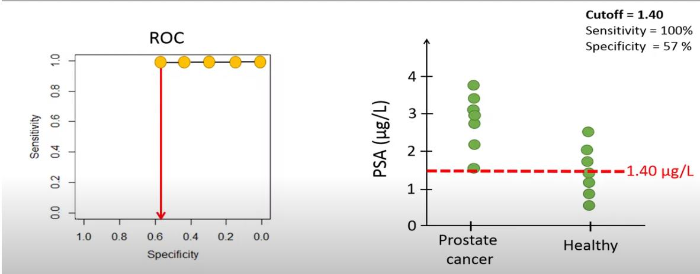
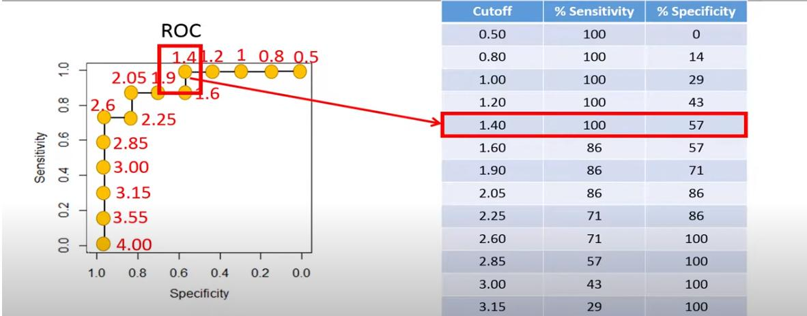
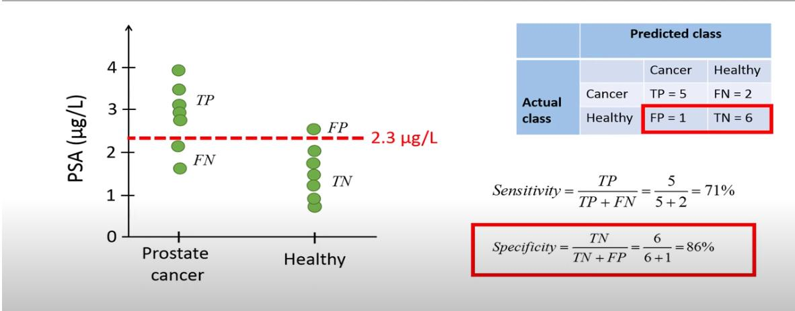
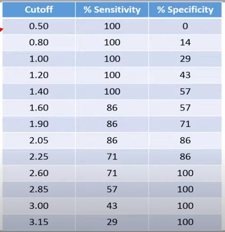
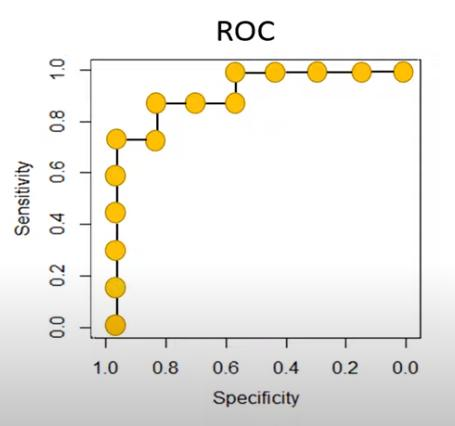

Mar 01, 2024
Linear Regression Tutorial using Tensorflow and Keras
Youtube video
Linear Regression Tutorial using Tensorflow and Keras
https://www.youtube.com/watch?v=yuAZQJ5BnJk
OpenCV University
https://opencv.org/university/
TensorFlow Bootcamp Example
works
Input:
Boston Housing Data
reduced to number of rooms column
Code:
model = Sequential()
model.add(Dense(units=1, input_shape=(1,)))
model.compile(optimizer=tf.keras.optimizers.RMSprop(learning_rate=0.005), loss="mse")
history = model.fit(
X_train_1d,
y_train,
batch_size=16,
epochs=101,
# epochs=10,
validation_split=0.3,
verbose=0
)
Output:
Predicted price of a home with 3 rooms: $11.4K
Predicted price of a home with 4 rooms: $14.7K
Predicted price of a home with 5 rooms: $18.0K
Predicted price of a home with 6 rooms: $21.4K
Predicted price of a home with 7 rooms: $24.7K
TensorFlow Bootcamp setting with bp - age data
does not work
Input:
| age |
blood pressure |
| 10 |
82 |
| 22 |
85 |
| 31 |
89 |
| 45 |
92 |
| 52 |
95 |
| 61 |
97 |
| 72 |
98 |
Code:
model = Sequential()
model.add(Dense(units=1, input_shape=(1,)))
model.compile(optimizer=tf.keras.optimizers.RMSprop(learning_rate=0.005), loss="mse")
history = model.fit(
bp,
age,
batch_size=5,
epochs=100,
# epochs=10,
validation_split=0.3,
verbose=0
)
Output:
Sometimes gives negative prediction values
Predicted age of a person with 80 blood pressure: [-48.579433]
Predicted age of a person with 90 blood pressure: [-54.777733]
Predicted age of a person with 100 blood pressure: [-60.976032]
Mar 02, 2024
more regression examples
"Basic regression: Predict fuel efficiency "
https://www.tensorflow.org/tutorials/keras/regression
"Linear Regression In Neural Network With Tensorflow 2.0"
https://www.youtube.com/watch?v=XZ4zLgxhgtk
Pathshala
Pathshala code
works
Input:
x y
0 1 4
1 2 6
2 3 8
3 4 10
4 5 12
5 6 14
6 7 16
7 8 18
8 9 20
Code:
model=Sequential()
model.add(Dense(1,input_shape=(1,)))
model.compile(optimizer='sgd', loss="mean_absolute_error")
model.fit(x,y,epochs=100,verbose=0)
Output:
Input: 1 prediction: [2.9726133]
Input: 2 prediction: [5.1563377]
Input: 3 prediction: [7.3400626]
Input: 4 prediction: [22.626135]
Mar 03, 2024
bp and age with Pathshala code
1000 epochs
three consecutive runs, weight w0 value:
Pathshala numbers | bp and age numbers
weight w0= [2.054422] | weight w0= [-0.03433532]
weight w0= [2.0014956] | weight w0= [1.0083628]
weight w0= [2.0016782] | weight w0= [-0.15887064]
Mar 07, 2024
T81-558: Applications of Deep Neural Networks uses a while loop
to go through multiple cycles for training the neural network
for the XOR function.
The function
model = Sequential()
is called in every iteration of the while loop.
is the model intialized with new random weights in each iteration,
or does the model retain the weights and biases calculated in the previous iteration?
Mar 11, 2024 part 1
ROC Curve
ROC curve - explained
by TileStats
https://www.youtube.com/watch?v=LpdTtX4WsiM


How to generate an ROC curve
We have a set of items, and each item is classified as either positive or negative.
There is a distinction between the real positive or negative, and the diagnosed positive or negative.
For each item, a value is measured and assigned a continuous variable.
A cut-off value is determined, such that every item with a value below the cut-off is diagnosed as negative,
and every item with a value above the cut-off is diagnosed as positive.
There will be true positives, false positives, true negatives, and false negatives.
For the ROC curve, we vary the cut-off value from the lowest to the highest of the possible range.
For each cut-off value, we count:
- TP - number of true positives
- FP - number of false positives
- TN - number of true negatives
- FN - number of false negatives
Example:

For each cut-off value, we calculate:
- sensitivity=TP/(TP+FN)
- specificity=TN/(TN+FP)
and enter the calculated values in a table:

We plot the ROC curve with Specificity on the x-axis and Sensitivity on the y-axis

Mar 11, 2024 part 2
Getting error again, despite using tensorflow version 2.15.0:
ValueError: Failed to convert a NumPy array to a Tensor (Unsupported object type float).
Solution:
https://stackoverflow.com/questions/58636087/tensorflow-valueerror-failed-to-convert-a-numpy-array-to-a-tensor-unsupporte
x_train = np.asarray(x_train).astype(np.float32)
y_train = np.asarray(y_train).astype(np.float32)
x_test = np.asarray(x_test).astype(np.float32)
y_test = np.asarray(y_test).astype(np.float32)
Interesting:
The code splits training and test data according to
x_train, x_test, y_train, y_test = train_test_split( x, y, test_size=0.25, random_state=42)
Print x_test[0:10] starts with
x_test
[[ 0.7720559 -0.68284637 0.83903146 3.6320686 ..
[-0.05720153 1.4147578 1.8865114 14.458124 ..
[ 0.36275634 -0.8710929 -0.20844851 10.160343 ..
[ 0.2674291 -0.70973873 -1.2559285 3.8224766 ..
[ 1.1742831 1.7285022 -1.2559285 12.227631 ..
(This is after converting data to zscore)
Printing the whole dataframe shows that the x_test values are at id's:
1860 1861 0.772056 -0.682846 0.839031 3.632069
353 354 -0.057202 1.414758 1.886511 14.458125
1333 1334 0.362756 -0.871093 -0.208449 10.160344
The according product values are
a b c d e f g
1860 False False True False False False False
353 False True False False False False False
1333 False True False False False False False
in other words, c b b
and y_test shows as
y_test
[[0. 0. 1. 0. 0. 0. 0.]
[0. 1. 0. 0. 0. 0. 0.]
[0. 1. 0. 0. 0. 0. 0.]
[0. 1. 0. 0. 0. 0. 0.]
[0. 0. 0. 1. 0. 0. 0.]
Mar 12, 2024
By default, the train_test_split function shuffles the matrices when generating the train and test data.
However, it offers the option to not shuffle the data:
train_test_split(y, shuffle=False)
https://scikit-learn.org/stable/modules/generated/sklearn.model_selection.train_test_split.html
When applying this option to the jh-simple-dataset data, the test data end up being at id 1500:
Printing the whole dataframe:
1500 1501 0.920177 0.195637 -0.208449 5.264137 .. c
1501 1502 -1.729662 -1.014519 -1.255928 3.632069 .. a
1502 1503 0.726135 -0.413923 -0.208449 6.624195 .. c
1503 1504 0.154570 -0.996591 -1.255928 11.112384 .. b
1504 1505 -2.855161 1.208583 1.886511 5.372942 .. a
Printing the test data:
x_test
[[0.9201767396007892 0.19563745517432052 -0.20844851356517272 5.264137437365784
[-1.729661903633492 -1.0145188576178745 -1.255928481229357 3.632068718682892
[0.7261354766498689 -0.4139227616395259 -0.20844851356517272 6.62419470293486
[0.15457040128417068 -0.9965906159468789 -1.255928481229357 11.112383679312812
[-2.855160995051586 1.2085831095855653 1.8865114217631958 5.37294201861131
The y_test data have the True in the correct positions
given that y_test is the product column starting at id=1500:
[c,a,c,b,a]
y_test
[[False False True False False False False]
[ True False False False False False False]
[False False True False False False False]
[False True False False False False False]
[ True False False False False False False]
This confirms, for a sample, that the product test data are the correct values.
The predicted values are
predicted values
[[0. 0.415 0.582 0.001 0.001 0. 0. ]
[0.591 0.087 0.001 0. 0.034 0.24 0.047]
[0. 0.395 0.594 0.006 0.005 0. 0. ]
[0. 0.718 0.27 0. 0.01 0.001 0. ]
[0.743 0.043 0. 0. 0.01 0.189 0.015]
or in argmax form:
[2 0 2 1 0]
So the highest probability for the product is
[c,a,c,b,a]
Showing a few more lines and comparing predicted and true values:
predicted vs true values
[2 0 2 1 0 1 3 1 0 2 1 1 2 0 1 0 1 1 1 1 1 1 1 1 1 2 3 1 0 0 2 1 1 1 2
[2 0 2 1 0 2 3 1 0 3 5 1 2 0 1 0 1 1 2 1 4 1 1 5 1 2 3 1 0 0 2 1 1 1 1
So there are a few incorrect predictions.